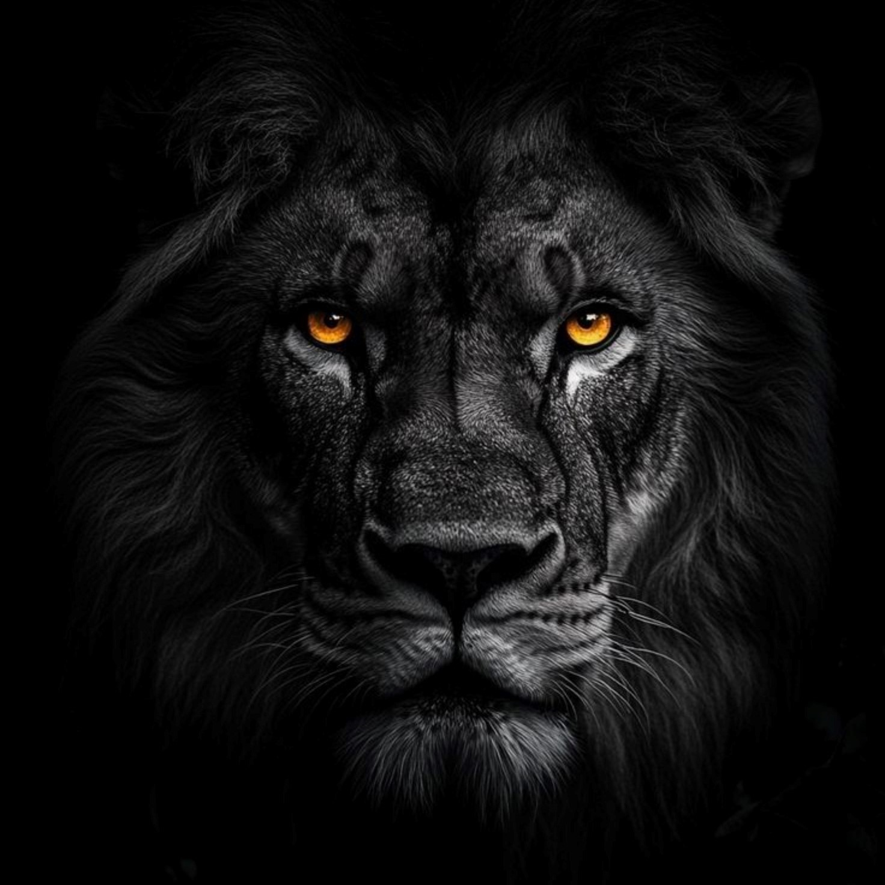
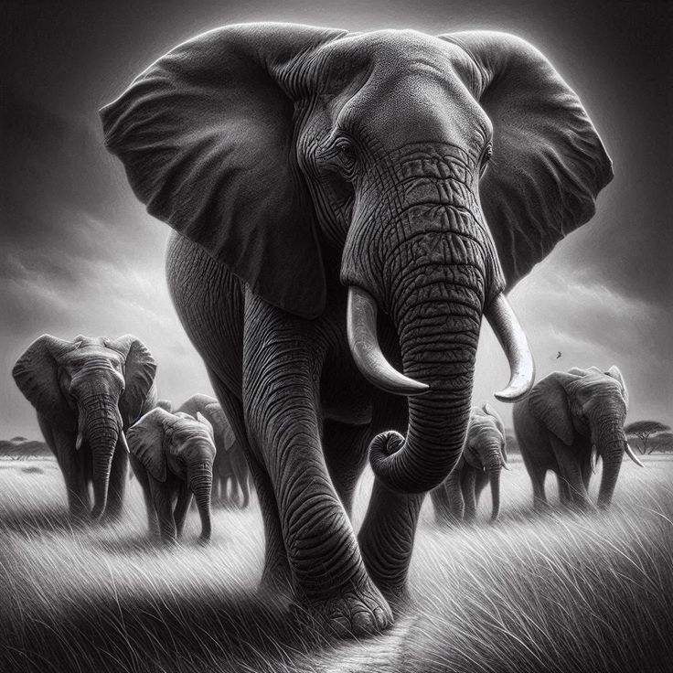

Lions are large, muscular cats known for their distinctive manes (males) and powerful build. They are apex predators, primarily found in Africa and India, and live in groups called prides. Lions are carnivores, hunting large animals like zebras and wildebeest. Their roar can be heard from a great distance, and they are often called the "king of the jungle". Lions play a vital role in maintaining ecological balance.

Elephants are the largest animals, known for their intelligence and social behavior . They have a long trunk used for various tasks like drinking, eating, and communication. Their large ears help regulate body temperature, and their tusks are actually elongated teeth. Elephants live in herds, primarily in Africa and Asia, and are herbivores, consuming large quantities of vegetation. Sadly, they are facing threats from habitat loss and poaching.
Snakes are the most specialized group of reptiles. Many species of snake are found all over the world. Some of which are poisonous and some are not poisonous. Among poisonous snakes, King Cobra is considered the most poisonous and is very dangerous. If the king cobra bites someone, it becomes difficult to survive. Snakes are found in large numbers in India, China, and Japan. Snakes are worshiped in India.
Eagles are large, powerful birds of prey known for their strong talons, hooked beaks, and excellent eyesight . They are skilled hunters, capable of soaring at high altitudes and diving quickly to catch their prey. Eagles are found on every continent except Antarctica and build their nests, called eyries, on high cliffs or in tall trees. There are over 60 different species of eagles, each adapted to its specific habitat and prey.